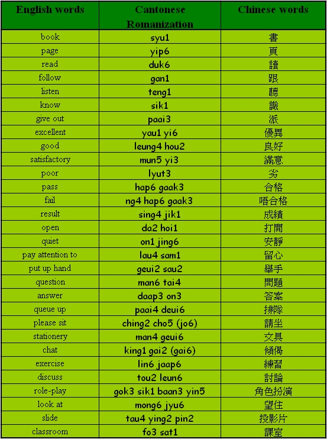

Unit 12 Classroom Language
Unit 12 Classroom Language 
Objectives
- To recognize and pronounce Cantonese words with the initials [l], [j], [h], [t], [y];
- To recognize and pronounce Cantonese words with the finals [u], [ai], [an], [aak], [in];
- To use simple Cantonese vocabulary and expressions in classroom language.

Warm up Work together.
- What would you do if you felt sick in a lesson?
- What would you do if you lost your wallet?
Vocabularies

Sentence structure
Auxiliary – AV (S AV V O)
Common auxiliary verbs: seung2 (want), ho2 yi5 (can), jung1 yi3 (like), yiu3 (need), sik1 (know).
We have to keep quiet and pay attention to the lesson.
我哋要快啲安靜，留心上堂。
[ngo5 dei6 yiu3 faai3 di1 on1 jing6, lau4 sam1 seung5 tong4.]
I want to get an excellent result.
我想攞優異成績。
[ngo5 seung2 lo2 yau1 yi6 sing4 jik1.]
We have to listen more and speak more.
我哋要聽多啲、講多啲。
[ngo5 dei6 yiu3 teng1 do1 di1, gong2 do1 di1.]
Conversation Practice with a partner.
Scene: Sally and Linda are going to have Cantonese lesson.
Sally: I wonder if we have to follow the teacher to read out the words.
唔知我哋駛唔駛跟老師一齊讀詞語呢？
[ng4 ji1 ngo5 dei6 sai2 ng4 sai2 gan1 lou5 si1 yat1 chai4 duk6 chi4 yu5 ne1?]
Linda: Of course we do. We also have to do the exercise, discussion and role-play.
實要啦，好似仲要做練習，討論同角色扮演。
[sat6 yiu3 la1, hou2 chi5 jung6 yiu3 jou6 lin6 jaap6, tou2 leun6 tung4 gok3 sik1 baan3 yin5.]
Sally: Oh, We have to keep quiet and pay attention to the lesson.
嘩！我哋要快啲安靜，留心上堂喇！
[wa3! ngo5 dei6 yiu3 faai3 di1 on1 jing6, lau4 sam1 seung5 tong4 la3!]
Linda: Yes, I want to get an excellent result. I do not want to fail.
係呀！我想攞優異成績，唔想唔合格呀！
[hai6 a3! ngo5 seung2 lo2 yau1 yi6 sing4 jik1, m4 seung2 m4 hap6 gaak3 a3!]
Sally: Then we have to listen more and speak more.
咁我哋要聽多啲、講多啲喎！
[gam2 ngo5 dei6 yiu3 teng1 do1 di1, gong2 do1 di1 wo3!]
Quiz
- Can you give me some examples of proper classroom behaviour?
- Do you know how to say ‘I don’t know’ in Cantonese?
- If you want to improve your spoken Cantonese, what should you do?